Quote Request: describe a job once, get competing quotes
I was the only designer on Quote Request, ConnectNigeria's services marketplace. I designed both sides of it, customers and vendors, on mobile and web, in two weeks. It went live in November 2025, people use it every day, and I've kept improving it since with feedback from users and the sales team.
The product in 57 seconds. Every shot is a real recording of the live app, not a mock-up.
Hiring a plumber in Lagos
shouldn't take ten phone calls.
- The problem: in Nigeria, finding someone to fix a leak, cater a wedding or install solar usually means asking around on WhatsApp and calling for prices one by one. You can't compare prices, and you can't tell who to trust.
- What I did: designed the whole product as the only designer: the customer app, the vendor app and the web app, working with a PM and three engineers.
- The calls that mattered: let people describe their job before asking them to sign up; four short questions so every vendor quotes on the same facts; tell customers exactly what happens after they submit; make trust something vendors earn and customers can see.
- Where it is now: live on Android, iOS and the web since November 2025, with 1,000+ Android installs and a 4.6 rating on Google Play. I'm running usability tests on the request flow to put hard numbers on it.
Nigeria's business directory
becomes a marketplace.
ConnectNigeria is one of the country's best-known business information platforms. Quote Request turns that directory into a two-sided marketplace. A customer describes a job once. ConnectNigeria's team checks the request, then it goes to confirmed vendors who cover that service and area. They send quotes, and the customer compares them on price, timeline and reviews before choosing one.
Customers never pay. Vendors buy a monthly plan that gives them a set number of matched requests. Management and the sales lead set the prices; I designed everything around them, from how a vendor picks a plan to how they pay.
I had two weeks. Most of it went into the mobile app, because that's where most customers are. The web app followed, deliberately mirroring the app, so anyone who won't install it, or is at a work laptop, gets the same product in a browser.
Walk through the product
the way users do.
Pick a side of the marketplace, then tap any step to jump to it. These are screen recordings of the live product.
One box to start,
on any screen.
The landing page has one job: get someone typing their problem. The first thing you see is a single field, "Describe your project or problem", with your city already filled in and one button. Everything else on the page, the screens, the vendor plans, the cities covered, is there to answer the questions people have before they trust a new service.
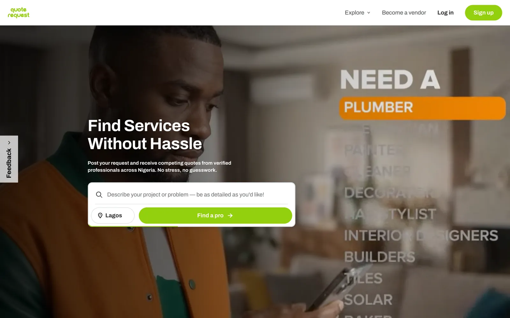
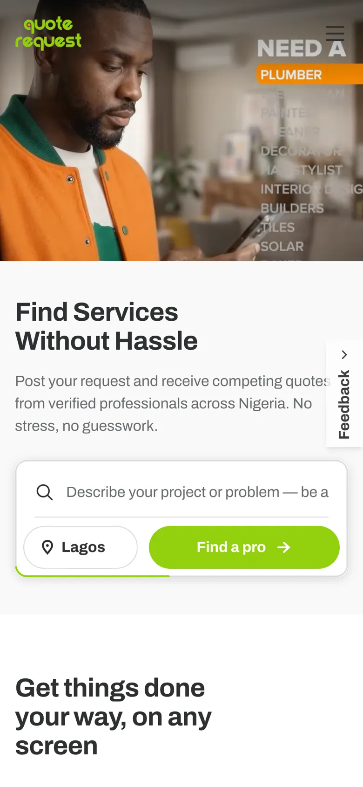
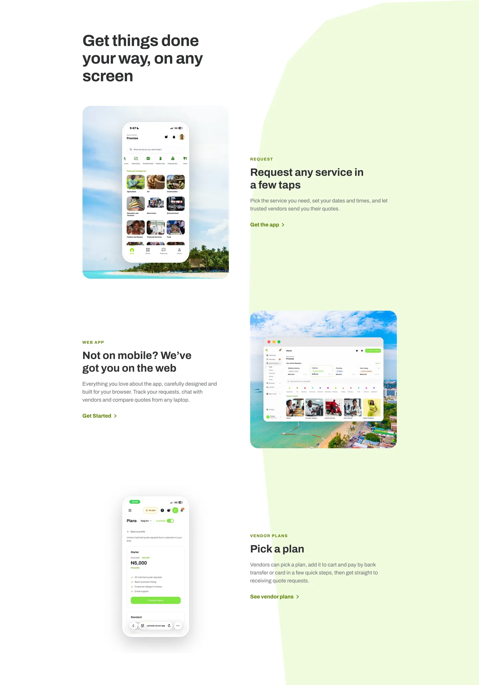
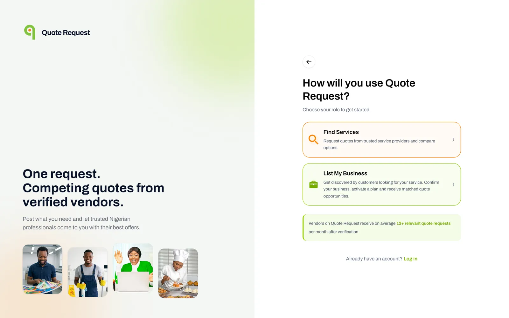
Let people ask first.
Ask who they are last.
Every request needs an account behind it, so vendors can be notified and reply. The easy design is a sign-up wall at the front door. But that asks a stranger to commit before they've seen whether the product can help them, and most people leave.
So a guest can go through the whole request. The account question only appears when they tap Submit, and it promises their request is saved and will be sent the moment they sign up. By then they've already done the hard part, describing their problem, and they have a reason to finish.
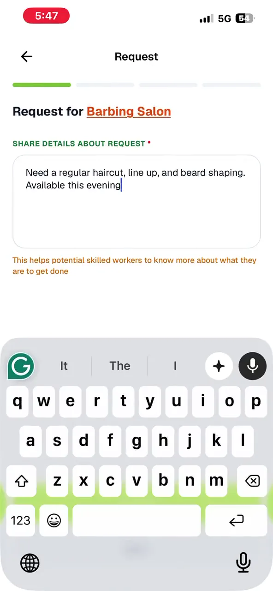
No account needed to start. The first thing a visitor does is describe their problem.

The account ask comes at Submit, with a promise: your request is saved and goes out right after you sign up.
Four small questions,
so every vendor quotes on the same facts.
A vague request gets vague replies, or vendors who just say "call me". A long form gets abandoned on a phone. So the request is four screens, one question each: what you need, when, your budget in naira, and where. The progress bar shows how close you are. A line under the first question tells you why it matters: it's what vendors read before they price your job.
Every input fits the thumb. Dates and times use the phone's own pickers, the budget opens the number pad, and location suggests real places as you type, so requests match the right vendors. Because every vendor sees the same date, budget and location, their quotes can be compared side by side.
1 · What you need, and why it matters
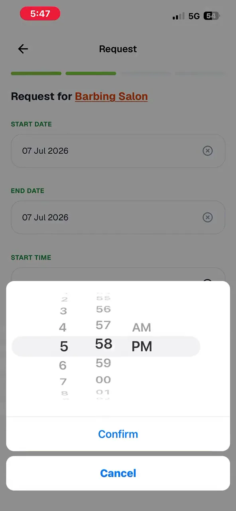
2 · When, with native pickers
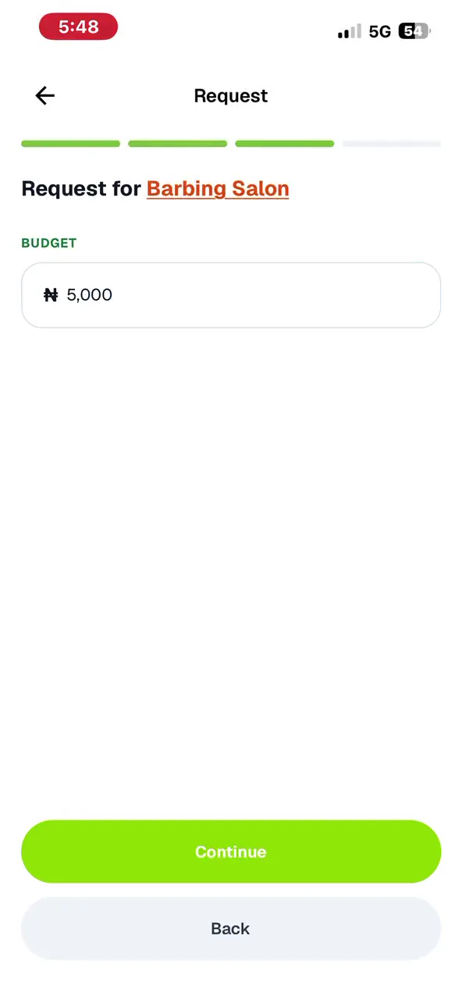
3 · Budget in naira, number pad
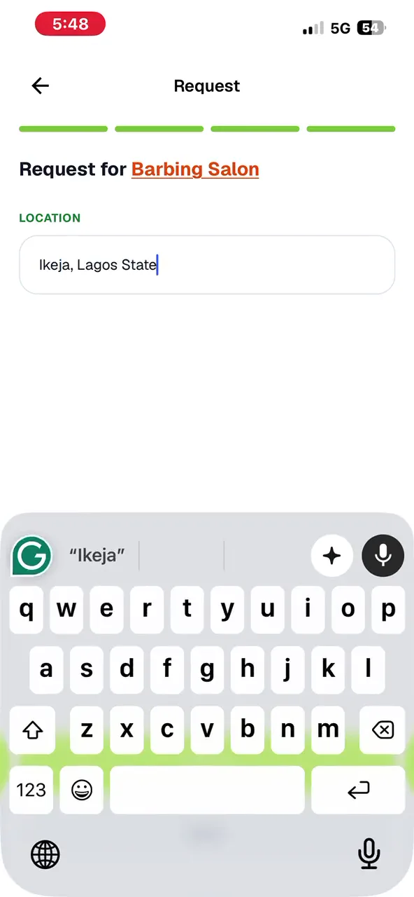
4 · Where, with suggestions
Quotes take time.
Silence feels like failure.
Quotes don't arrive instantly. ConnectNigeria's team reviews each request, then vendors need time to reply. Without an explanation, a customer who submits and sees nothing assumes the app is broken.
So the confirmation screen tells them exactly what happens next, in four plain steps: our team reviews your request, vendors in your area are notified, they send quotes, you compare and choose. After that, every request on the customer's list carries a status (Active, In progress, Confirm needed, Completed, Expired), and anything waiting on them is flagged, so they always know whose move it is.
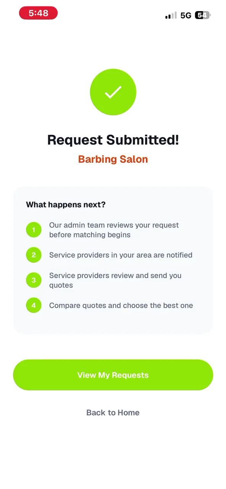
The four steps after Submit, so waiting feels like progress.
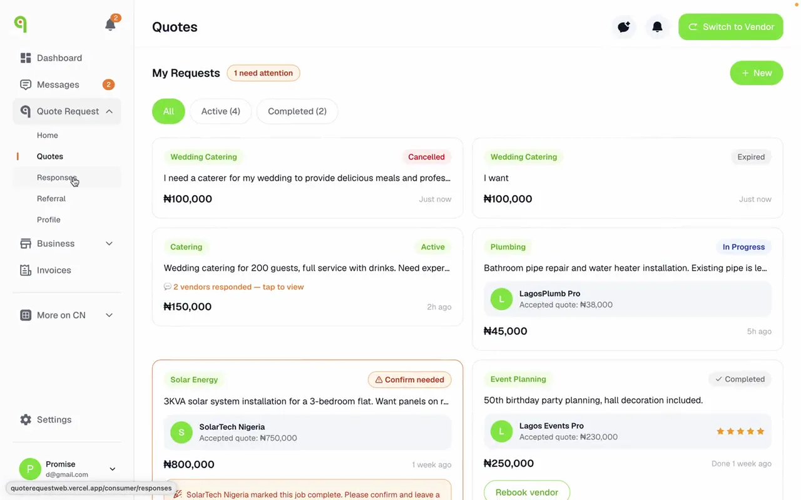
Every request shows its status. "1 need attention" points to the request waiting on you.
You're letting a stranger into your home.
Trust has to be earned, and visible.
Every vendor is confirmed before they can quote, and the badge shows on their listing. A registered business confirms with its CAC number (the Corporate Affairs Commission is Nigeria's company registry), which is a single field. A business without one can upload its certificate and a director's ID instead.
Reviews close the loop. When a vendor marks a job done, the customer is asked to confirm it and leave a rating, so a review only ever comes from a finished job. Completed jobs show the rating and a one-tap "Rebook vendor", which rewards good vendors with repeat work.
Built for how Nigerian businesses
actually work.
Vendors are small business owners running everything from a phone. Three details matter to them:
- Pay the way they pay. Checkout takes card through Paystack or a plain bank transfer, which many small businesses here prefer, with discount codes, referrals and loyalty points built into the payment summary.
- Cover the area they actually serve. A cleaner in Lekki and a solar installer who travels across the South West need different reach, so coverage can be a city, a state, one of Nigeria's six geopolitical regions, or all 36 states and Abuja.
- One person, two roles. Plenty of vendors also hire. One account can switch between customer and vendor, and one vendor can run several businesses.
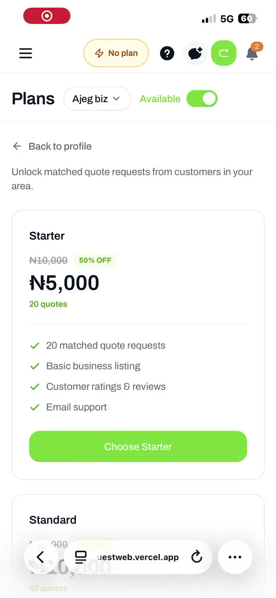
Plans
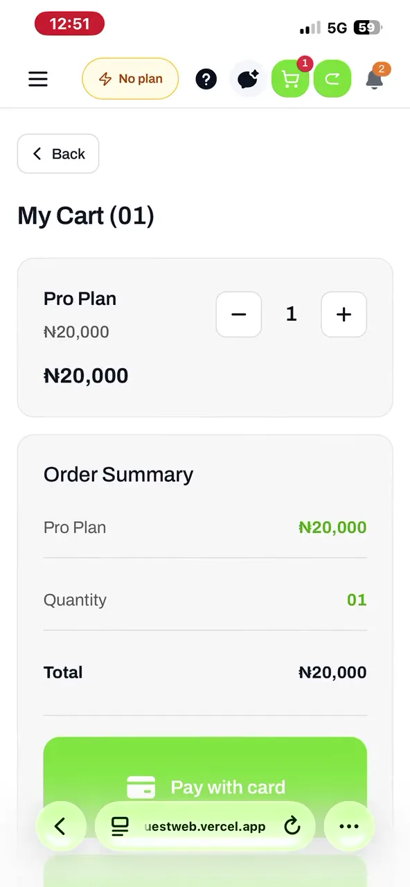
Card or bank transfer
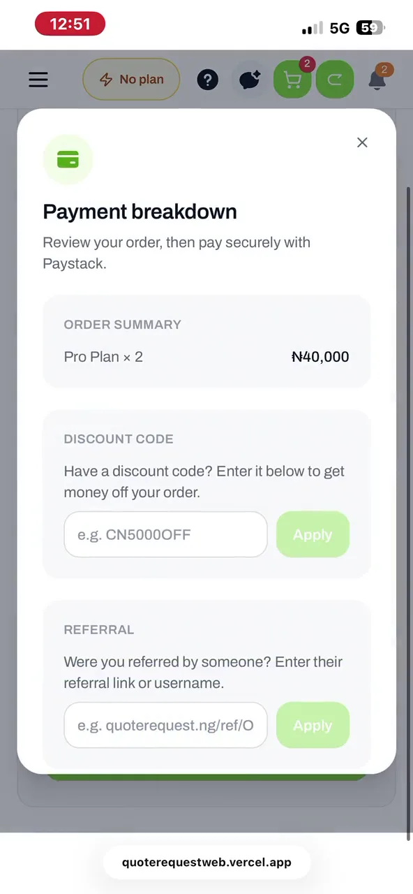
Codes, referrals, points
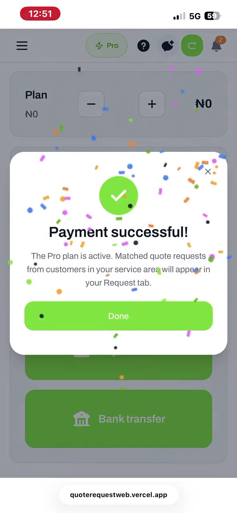
Straight to receiving requests
Shipping was the start.
Real users shaped the rest.
ConnectNigeria put real weight behind the launch: billboards, an agency and a sales team on the ground. The sales team became one of my best sources of feedback, because they talk to vendors every day. Since launch I've revised the product many times based on what users and sales reported, and the app keeps shipping updates: better quote tracking for vendors who run several businesses, more reliable chat, and messages that are kept when sending fails.
Every step has a number.
Here's where I'm putting them.
Tap a step to see what I designed there and the metric that tells us if it's working.
What I'd do differently
We launched without agreeing which numbers would tell us the product was working, so most of what I knew about growth came from stakeholder meetings. Next time, before launch, I'd sit with the PM and define the funnel above and the events that track it. I'm fixing that now: I'm running usability tests on the request flow with first-time users to put real numbers on the first half of it.